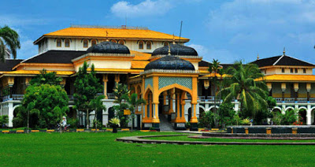

Istana Maimun adalah istana Kesultanan Deli yang merupakan salah satu ikon kota Medan, Sumatera Utara, terletak di Jalan Brigadir Jenderal Katamso, Kelurahan Sukaraja, Kecamatan Medan Maimun.
Didesain oleh arsitek Italia dan dibangun oleh Sultan Deli, Sultan Mahmud Al Rasyid. Pembangunan istana ini dimulai dari 26 Agustus 1888 dan selesai pada 18 Mei 1891. Istana Maimun memiliki luas sebesar 2.772 m2 dan 30 ruangan. Istana Maimun terdiri dari 2 lantai dan memiliki 3 bagian yaitu bangunan induk, bangunan sayap kiri dan bangunan sayap kanan. Bangunan istana ini menghadap ke utara dan pada sisi depan terdapat bangunan Masjid Al-Mashun atau yang lebih dikenal dengan sebutan Masjid Raya Medan.
Istana Maimun menjadi tujuan wisata bukan hanya karena usianya yang tua, namun juga desain interiornya yang unik, memadukan unsur-unsur warisan kebudayaan Melayu, dengan gaya Islam, Spanyol, India dan Italia. Namun sayang, tempat wisata ini tidak bebas dari kawasan Pedagang kaki lima.
Sejak tahun 1946, Istana ini dihuni oleh para ahli waris Kesultanan Deli. Dalam waktu-waktu tertentu, di istana ini sering diadakan pertunjukan musik tradisional Melayu. Biasanya, pertunjukan-pertunjukan tersebut dihelat dalam rangka memeriahkan pesta perkawinan dan kegiatan sukacita lainnya. Selain itu, dua kali dalam setahun, Sultan Deli biasanya mengadakan acara silaturahmi antar keluarga besar istana. Pada setiap malam Jumat, para keluarga sultan mengadakan acara rawatib adat (semacam wiridan keluarga).

Kisah meriam puntung ini punya kaitan dengan Putri Hijau. Dikisahkan, di Kerajaan Timur Raya, hiduplah seorang putri yang cantik jelita, bernama Putri Hijau. Ia disebut demikian, karena tubuhnya memancarkan warna hijau. Ia memiliki dua orang saudara laki-laki, yaitu Mambang Yasid dan Mambang Khayali. Suatu ketika, datanglah Raja Aceh meminang Putri Hijau, namun, pinangan ini ditolak oleh kedua saudaranya. Raja Aceh menjadi marah, lalu menyerang Kerajaan Timur Raya. Raja Aceh berhasil mengalahkan Mambang Yasid. Saat tentara Aceh hendak masuk istana menculik Putri Hijau, mendadak terjadi keajaiban, Mambang Khayali tiba-tiba berubah menjadi meriam dan menembak membabi-buta tanpa henti. Karena terus-menerus menembakkan peluru ke arah pasukan Aceh, maka meriam ini terpecah dua. Bagian depannya ditemukan di daerah Surbakti, di dataran tinggi Karo, dekat Kabanjahe. Sementara bagian belakang terlempar ke Labuhan Deli, kemudian dipindahkan ke halaman Istana Maimun.Setiap hari, Istana ini terbuka untuk umum, kecuali bila ada penyelenggaraan upacara khusus.
Istana ini terletak di jalan Brigadir Jenderal Katamso, kelurahan Sukaraja, kecamatan Medan Maimun, Medan, Sumatera Utara.
Luas istana lebih kurang 2.772 m, dengan halaman yang luasnya mencapai 4 hektar. Panjang dari depan kebelakang mencapai 75,50 m. dan tinggi bangunan mencapai 14,14 m. Bangunan istana bertingkat dua, ditopang oleh tiang kayu dan batu. Setiap sore, biasanya banyak anak-anak yang bermain di halaman istana yang luas.
Arsitektur bangunan merupakan perpaduan antara ciri arsitektur Moghul, Timur Tengah, Spanyol, India, Belanda dan Melayu. Pengaruh arsitektur Belanda tampak pada bentuk pintu dan jendela yang lebar dan tinggi. Tapi, terdapat beberapa pintu yang menunjukkan pengaruh Spanyol. Pengaruh Islam tampak pada keberadaaan lengkungan (arcade) pada atap. Tinggi lengkungan tersebut berkisar antara 5 sampai 8 meter. Bentuk lengkungan ini amat populer di kawasan Timur Tengah, India dan Turki.Ada beberapa pendapat mengenai siapa sesungguhnya perancang istana ini. Beberapa sumber menyebutkan perancangnya seorang arsitek berkebangsaan Italia, namun tidak diketahui namanya secara pasti. Sumber lain, yaitu pemandu wisata yang bertugas di istana ini, mengungkapkan bahwa arsiteknya adalah seorang Kapitan Belanda bernama T. H. Van Erp.Istana Maimun telah dinobatkan sebagai bangunan terindah di Kota Medan, Sumatera Utara. Terletak di kawasan Jl. Brigjen Katamso, istana megah ini selesai dibangun sekitar tahun 1888 dan merupakan warisan dari Sultan Deli Makmun Al Rasyid Perkasa Alamsyah. Sapuan warna kuning pada gedung ini merupakan warna khas Melayu.
Sekian ulasan tentang Istana Maimun Jangan Lupa Berkunjung yahh ...